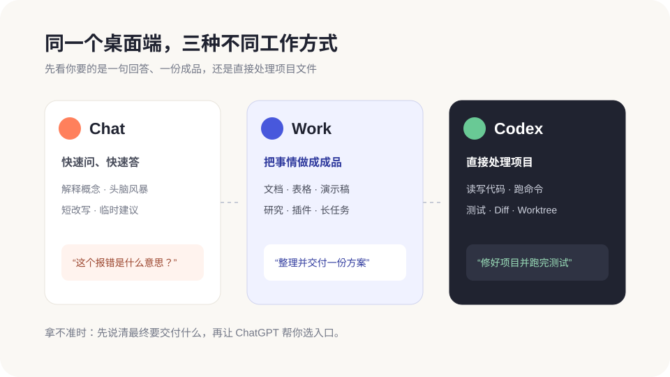

Chat、Work、Codex 与多智能体
新版桌面端不再只有“让 Codex 改代码”这一条路。你可以快速聊天、让 Work 交付文档和表格，也可以继续用 Codex 处理项目。再配合 GPT-5.6 和多个子智能体，大任务可以被拆开并行完成。

Chat、Work、Codex 到底怎么选
| 入口 | 最适合做什么 | 不适合硬塞什么 | 一句话例子 |
|---|---|---|---|
| Chat | 问答、解释、想点子、短改写。 | 需要长期运行或直接改项目的大任务。 | “用小白能懂的话解释这个报错。” |
| ChatGPT Work | 研究、分析、文档、表格、演示稿、定时更新和多工具工作流。 | 只问一句就能解决的小问题。 | “根据这些资料做一份可汇报的竞品分析。” |
| Codex | 读取项目、改代码、跑命令、测试、Review、Git 和 Worktree。 | 和项目文件无关的普通闲聊。 | “修复登录问题，跑测试并说明改动。” |
Work 和 Codex 不是互相替代。比如你可以先用 Work 整理产品需求，再把明确的需求交给 Codex 开发；也可以让 Codex 做出数据文件，再用 Work 把它整理成演示稿。
GPT-5.6：Sol、Terra、Luna 怎么选
官方当前推荐从 Power 开始，它默认使用 GPT-5.6 Sol 和中等推理强度。新手不需要一上来研究所有型号，按任务难度选就行:
| 模型 | 通俗理解 | 适合任务 |
|---|---|---|
| Sol | 更仔细、更会处理模糊问题 | 复杂改造、深度研究、安全检查、重要成品。 |
| Terra | 日常主力，能力和成本更平衡 | 一般开发、资料整理、常规工具调用。 |
| Luna | 更快、更省，适合规则清楚的重复活 | 提取、分类、格式转换、批量摘要。 |
界面里的 Faster / Power / Smarter 是更容易理解的快速选择；打开 Advanced 才需要手动挑具体模型、推理强度或速度。
Light、Max、Ultra 有什么区别
| 档位 | 发生了什么 | 什么时候用 |
|---|---|---|
| Light / Medium / High | 同一个任务思考得更浅或更深。 | 从默认档开始，结果不够再提高。 |
| Max | 让一个模型花更多时间深挖同一件事。 | 问题很难，但不容易拆成几块。 |
| Ultra | 启动多个子智能体，把独立部分并行处理。 | 大型审查、调研、测试和多模块任务。 |
| Fast mode | 让支持模型约快 1.5 倍，但消耗更多额度。 | 确实赶时间，并且你清楚额度成本时。 |
如果模型滑杆里看不到 Ultra，可以去 Settings > Configuration 检查是否有 Ultra in model picker slider。功能能否出现还会受套餐、账号、地区和工作区策略影响。
多智能体：像把任务分给一个小组
子智能体就是主任务临时叫来的帮手。主智能体负责听懂目标、分工和合并结果；子智能体分别去查代码、跑测试、看安全风险，做完再把结论交回来。
App 会把子智能体显示成独立任务，你可以打开查看过程和结果，也可以让主任务停止、调整或关闭它们。子智能体会继承当前权限模式，不会因为并行工作就自动得到更大的访问范围。
Goal、Scheduled 和长任务
任务步骤很多时，可以先输入 /plan 让它帮你理清范围，再用 /goal 把“完成标准”固定下来。Goal 运行时，输入框上方会出现进度条，你可以暂停、继续、修改或清除目标。
Scheduled 适合定时、事件触发或持续监控。比如每天汇总一次资料、每周更新一份报告，或者盯住某个页面变化。长任务不会获得额外权限；碰到需要你决定的动作，它仍然会停下来问。
不想一直盯着窗口，可以打开系统通知。Pets 也是可选的任务状态提示，会显示 Running、Needs input、Ready 或 Blocked；它只负责提醒，不会让模型变强。
文件交付、标注和可视化
桌面端可以在对话旁预览生成的文档、演示稿、表格和 PDF。看到某一块不满意，可以直接框选或标注，再说“只改这里，其他部分保持不动”。这和你在网页上标注问题的用法是一致的。
Visualize 是正在逐步开放的预览功能。输入 @Visualize 后，可以让 ChatGPT 生成图表、地图、流程图、计算器、模拟器或互动讲解。CLI 和 IDE 扩展目前不负责渲染这类互动内容。
Projects、Tasks 和 Quick Chat
新版项目页会把 ChatGPT 项目和本地文件夹项目放在一起。一个项目负责保存共同资料和背景，每个独立结果再开一条 Task，这样不会把所有事情混成一锅。
- Project:长期主题或一组相关文件，相当于工作区。
- Task:一个明确结果，例如“重做首页”或“检查移动端”。旧文档里也常叫 thread。
- Quick Chat:临时问一句，不需要项目上下文；快捷键是 macOS 的 Cmd+Option+N 或 Windows 的 Ctrl+Alt+N。
零基础用户怎么开始
- 在 Chat 里问:“给我 3 个个人作品集网站的栏目建议。”
- 在 Work 里说:“把选中的栏目整理成一份网站策划文档。”
- 在 Codex 里打开项目文件夹，说:“按这份策划先搭首页骨架，完成后给我看 Diff。”
- 最后比较三次输出，看看每个入口是不是各做了最擅长的事。
官方资料入口
- What's new:每周重要功能摘要。
- Get started with Work:Work 的定位与使用方法。
- Models:GPT-5.6、Sol、Terra、Luna、Max 和 Ultra。
- Subagents:多智能体、分工、权限和消耗。
- Long-running work:Goal 和长任务。
- Visualizations:互动图表和可视化预览。
- Work with files:文件预览、标注和修改。